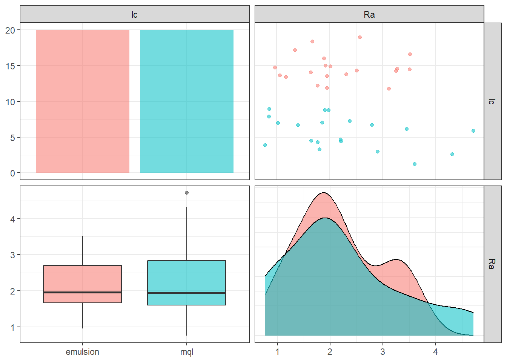
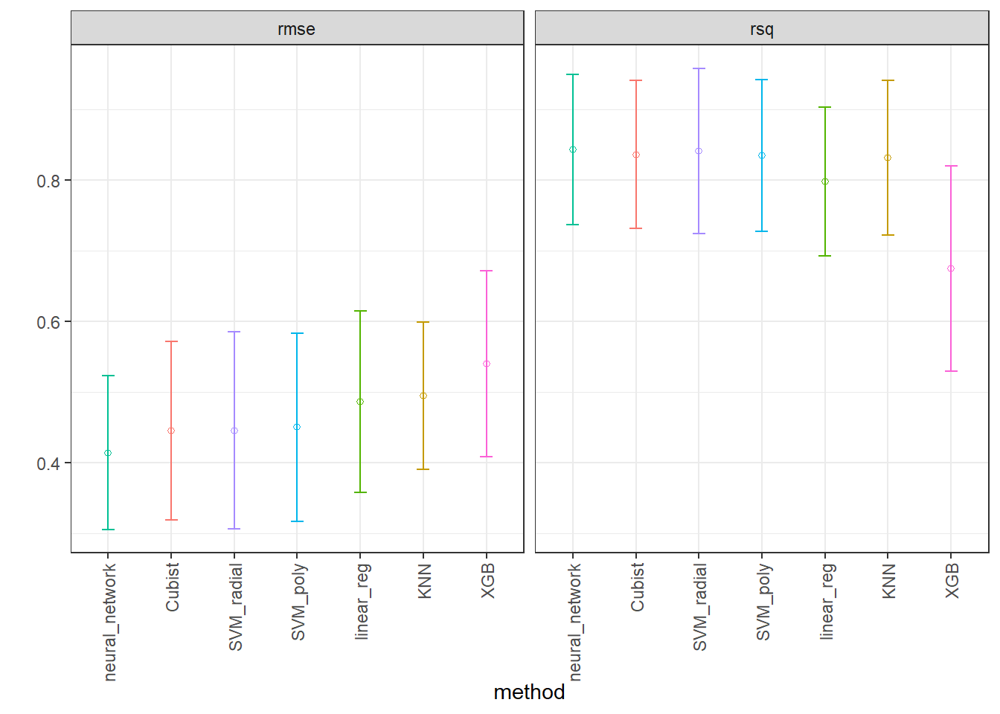
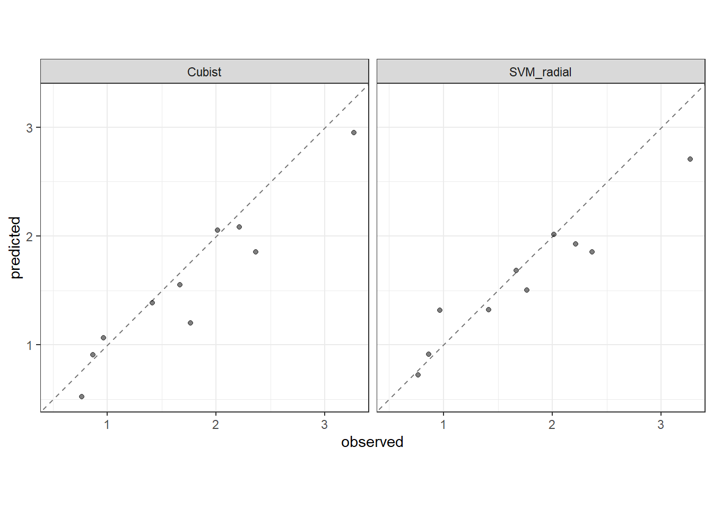

library(rsm)
library(MaxPro)
library(dplyr)
library(tidymodels)
library(rules)
library(baguette)
library(finetune)
library(GGally)Ra modeling - Helical milling of Inconel 718 with round carbide inserts
Libraries loading
The following libraries must be loaded to perform the analysis.
Experimental design
The experimental design is a Box-Behnken design augmented considering the maximum projection criteria.
plan <- bbd(3,
n0 = 2,
coding = list(x1 ~ (fza - 0.875)/0.375, # um/dente
x2 ~ (fzt - 0.15)/0.05, # mm/dente
x3 ~ (vc - 40)/20), # m/min
randomize = F)
plan01 <- plan[,3:5]
plan01$x1 <- (plan$x1 - min(plan$x1))/(max(plan$x1) - min(plan$x1))
plan01$x2 <- (plan$x2 - min(plan$x2))/(max(plan$x2) - min(plan$x2))
plan01$x3 <- (plan$x3 - min(plan$x3))/(max(plan$x3) - min(plan$x3))
set.seed(7)
plan_cand <- CandPoints(N = 6, p_cont = 3, l_disnum=NULL, l_nom=NULL)
plan_rand <- MaxProAugment(as.matrix(plan01), plan_cand, nNew = 6,
p_disnum=0, l_disnum=NULL, p_nom=0, l_nom=NULL)
plan_rand2 <- data.frame(plan_rand$Design)
colnames(plan_rand2) <- c("x1","x2", "x3")
plan_rand2$x1 <- plan_rand2$x1*(max(plan$x1) - min(plan$x1)) + min(plan$x1)
plan_rand2$x2 <- plan_rand2$x2*(max(plan$x2) - min(plan$x2)) + min(plan$x2)
plan_rand2$x3 <- plan_rand2$x3*(max(plan$x3) - min(plan$x3)) + min(plan$x3)
plan2 <- data.frame(plan_rand2)
plan2$fza <- plan2$x1*0.375 + 0.875
plan2$fzt <- plan2$x2*0.05 + 0.15
plan2$vc <- plan2$x3*20 + 40
set.seed(5)
plan2$run.order <- sample(1:nrow(plan2),nrow(plan2),replace=F)
plan2 x1 x2 x3 fza fzt vc run.order
1 -1.0000000 -1.0000000 0.0000000 0.5000 0.1000000 40.00000 2
2 1.0000000 -1.0000000 0.0000000 1.2500 0.1000000 40.00000 11
3 -1.0000000 1.0000000 0.0000000 0.5000 0.2000000 40.00000 15
4 1.0000000 1.0000000 0.0000000 1.2500 0.2000000 40.00000 19
5 -1.0000000 0.0000000 -1.0000000 0.5000 0.1500000 20.00000 9
6 1.0000000 0.0000000 -1.0000000 1.2500 0.1500000 20.00000 16
7 -1.0000000 0.0000000 1.0000000 0.5000 0.1500000 60.00000 5
8 1.0000000 0.0000000 1.0000000 1.2500 0.1500000 60.00000 7
9 0.0000000 -1.0000000 -1.0000000 0.8750 0.1000000 20.00000 13
10 0.0000000 1.0000000 -1.0000000 0.8750 0.2000000 20.00000 3
11 0.0000000 -1.0000000 1.0000000 0.8750 0.1000000 60.00000 17
12 0.0000000 1.0000000 1.0000000 0.8750 0.2000000 60.00000 6
13 0.0000000 0.0000000 0.0000000 0.8750 0.1500000 40.00000 20
14 0.0000000 0.0000000 0.0000000 0.8750 0.1500000 40.00000 12
15 -0.5000000 -0.5000000 -0.1666667 0.6875 0.1250000 36.66667 14
16 0.8333333 -0.8333333 0.5000000 1.1875 0.1083333 50.00000 4
17 -0.8333333 0.5000000 -0.8333333 0.5625 0.1750000 23.33333 18
18 0.5000000 0.1666667 0.1666667 1.0625 0.1583333 43.33333 8
19 -0.1666667 -0.1666667 -0.5000000 0.8125 0.1416667 30.00000 1
20 0.1666667 0.8333333 0.8333333 0.9375 0.1916667 56.66667 10Measurement results
Initially measurements are stored in the design for both lubri-cooling types.
plan_ <- rbind(plan2, plan2)
rough <- c(1.9155556, 3.5155556, 1.0655556, 1.9655556, 1.7655556, 3.2655556, 1.1655556, 2.5655556, 3.1155556, 1.6655556, 3.2655556, 1.3655556, 1.9155556, 2.0155556, 1.9655556, 3.5155556, 0.9655556, 2.5155556, 1.6655556, 2.3155556, 1.6655556, 3.6155556, 0.7655556, 1.9655556, 0.8655556, 2.8155556, 1.0155556, 4.3155556, 2.9155556, 1.4155556, 4.7155556, 1.8655556, 1.8155556, 2.2155556, 1.7655556, 3.4655556, 0.8655556, 2.2155556, 2.3655556, 1.9155556)
plan_ <- plan_ %>%
mutate(lc = rep(c("emulsion", "mql"), each = 20),
Ra = rough)
plan_ <- plan_ %>%
select(fza,fzt,vc,lc,Ra)
plan_ fza fzt vc lc Ra
1 0.5000 0.1000000 40.00000 emulsion 1.9155556
2 1.2500 0.1000000 40.00000 emulsion 3.5155556
3 0.5000 0.2000000 40.00000 emulsion 1.0655556
4 1.2500 0.2000000 40.00000 emulsion 1.9655556
5 0.5000 0.1500000 20.00000 emulsion 1.7655556
6 1.2500 0.1500000 20.00000 emulsion 3.2655556
7 0.5000 0.1500000 60.00000 emulsion 1.1655556
8 1.2500 0.1500000 60.00000 emulsion 2.5655556
9 0.8750 0.1000000 20.00000 emulsion 3.1155556
10 0.8750 0.2000000 20.00000 emulsion 1.6655556
11 0.8750 0.1000000 60.00000 emulsion 3.2655556
12 0.8750 0.2000000 60.00000 emulsion 1.3655556
13 0.8750 0.1500000 40.00000 emulsion 1.9155556
14 0.8750 0.1500000 40.00000 emulsion 2.0155556
15 0.6875 0.1250000 36.66667 emulsion 1.9655556
16 1.1875 0.1083333 50.00000 emulsion 3.5155556
17 0.5625 0.1750000 23.33333 emulsion 0.9655556
18 1.0625 0.1583333 43.33333 emulsion 2.5155556
19 0.8125 0.1416667 30.00000 emulsion 1.6655556
20 0.9375 0.1916667 56.66667 emulsion 2.3155556
21 0.5000 0.1000000 40.00000 mql 1.6655556
22 1.2500 0.1000000 40.00000 mql 3.6155556
23 0.5000 0.2000000 40.00000 mql 0.7655556
24 1.2500 0.2000000 40.00000 mql 1.9655556
25 0.5000 0.1500000 20.00000 mql 0.8655556
26 1.2500 0.1500000 20.00000 mql 2.8155556
27 0.5000 0.1500000 60.00000 mql 1.0155556
28 1.2500 0.1500000 60.00000 mql 4.3155556
29 0.8750 0.1000000 20.00000 mql 2.9155556
30 0.8750 0.2000000 20.00000 mql 1.4155556
31 0.8750 0.1000000 60.00000 mql 4.7155556
32 0.8750 0.2000000 60.00000 mql 1.8655556
33 0.8750 0.1500000 40.00000 mql 1.8155556
34 0.8750 0.1500000 40.00000 mql 2.2155556
35 0.6875 0.1250000 36.66667 mql 1.7655556
36 1.1875 0.1083333 50.00000 mql 3.4655556
37 0.5625 0.1750000 23.33333 mql 0.8655556
38 1.0625 0.1583333 43.33333 mql 2.2155556
39 0.8125 0.1416667 30.00000 mql 2.3655556
40 0.9375 0.1916667 56.66667 mql 1.9155556Visualization to see lubri-cooling influence on Ra.
gg2 <- ggpairs(plan_, columns = 4:5, aes(colour = lc, alpha = 0.1),
lower = list(continuous = "cor" , combo ="box_no_facet"),
upper = list(continuous = "points", combo = "dot_no_facet")) + theme_bw()
gg2
Modeling and learning workflow
Data spliting
The data is splitted to model training (75%) and validation (25%). The training data is used to tuning the hyperparameters of the models with a 10-fold cross-validation repeated twice.
set.seed(1501)
plan_split <- initial_split(plan_, strata = lc)
plan_train <- training(plan_split)
plan_test <- testing(plan_split)
set.seed(1502)
plan_folds <-
vfold_cv(v = 10, plan_train, repeats = 2)
plan_test fza fzt vc lc Ra
5 0.5000 0.1500000 20.00000 emulsion 1.7655556
10 0.8750 0.2000000 20.00000 emulsion 1.6655556
11 0.8750 0.1000000 60.00000 emulsion 3.2655556
14 0.8750 0.1500000 40.00000 emulsion 2.0155556
17 0.5625 0.1750000 23.33333 emulsion 0.9655556
23 0.5000 0.2000000 40.00000 mql 0.7655556
30 0.8750 0.2000000 20.00000 mql 1.4155556
34 0.8750 0.1500000 40.00000 mql 2.2155556
37 0.5625 0.1750000 23.33333 mql 0.8655556
39 0.8125 0.1416667 30.00000 mql 2.3655556Recipes
A normalized recipe is conceived to avoid scale and measurement units effects all numerical variables (fza, fzt, and vc) are standardized. The categorical variable (lubri-cooling) was defined as dummy variable.
normalized_rec <-
recipe(Ra ~ ., data = plan_train) %>%
step_normalize(fza,fzt,vc) %>%
step_dummy(all_nominal_predictors())
# poly_recipe <-
# normalized_rec %>%
# step_poly(fza,fzt,vc) %>%
# step_interact(~ all_predictors():all_predictors())Models
Seven model types were defined: linear regression, neural networks, support vector machine (with radial and polynomial kernels), k-nearest neighbors, extreme gradient boosting, and cubist.
linear_reg_spec <-
linear_reg(penalty = tune(), mixture = tune()) %>%
set_engine("glmnet")
nnet_spec <-
mlp(hidden_units = tune(), penalty = tune(), epochs = tune()) %>%
set_engine("nnet", MaxNWts = 2600) %>%
set_mode("regression")
svm_r_spec <-
svm_rbf(cost = tune(), rbf_sigma = tune()) %>%
set_engine("kernlab") %>%
set_mode("regression")
svm_p_spec <-
svm_poly(cost = tune(), degree = tune()) %>%
set_engine("kernlab") %>%
set_mode("regression")
knn_spec <-
nearest_neighbor(neighbors = tune(), dist_power = tune(), weight_func = tune()) %>%
set_engine("kknn") %>%
set_mode("regression")
xgb_spec <-
boost_tree(tree_depth = tune(), learn_rate = tune(), loss_reduction = tune(),
min_n = tune(), sample_size = tune(), trees = tune()) %>%
set_engine("xgboost") %>%
set_mode("regression")
cubist_spec <-
cubist_rules(committees = tune(), neighbors = tune()) %>%
set_engine("Cubist")
nnet_param <-
nnet_spec %>%
extract_parameter_set_dials() %>%
update(hidden_units = hidden_units(c(1, 27)))Workflows
Two workflow is defined considering all methods, predictors, and response.
normalized <-
workflow_set(
preproc = list(normalized = normalized_rec),
models = list(linear_reg = linear_reg_spec,
SVM_radial = svm_r_spec,
SVM_poly = svm_p_spec,
KNN = knn_spec,
neural_network = nnet_spec,
XGB = xgb_spec,
Cubist = cubist_spec)
)
normalized# A workflow set/tibble: 7 × 4
wflow_id info option result
<chr> <list> <list> <list>
1 normalized_linear_reg <tibble [1 × 4]> <opts[0]> <list [0]>
2 normalized_SVM_radial <tibble [1 × 4]> <opts[0]> <list [0]>
3 normalized_SVM_poly <tibble [1 × 4]> <opts[0]> <list [0]>
4 normalized_KNN <tibble [1 × 4]> <opts[0]> <list [0]>
5 normalized_neural_network <tibble [1 × 4]> <opts[0]> <list [0]>
6 normalized_XGB <tibble [1 × 4]> <opts[0]> <list [0]>
7 normalized_Cubist <tibble [1 × 4]> <opts[0]> <list [0]>normalized <-
normalized %>%
option_add(param_info = nnet_param, id = "normalized_neural_network")
normalized# A workflow set/tibble: 7 × 4
wflow_id info option result
<chr> <list> <list> <list>
1 normalized_linear_reg <tibble [1 × 4]> <opts[0]> <list [0]>
2 normalized_SVM_radial <tibble [1 × 4]> <opts[0]> <list [0]>
3 normalized_SVM_poly <tibble [1 × 4]> <opts[0]> <list [0]>
4 normalized_KNN <tibble [1 × 4]> <opts[0]> <list [0]>
5 normalized_neural_network <tibble [1 × 4]> <opts[1]> <list [0]>
6 normalized_XGB <tibble [1 × 4]> <opts[0]> <list [0]>
7 normalized_Cubist <tibble [1 × 4]> <opts[0]> <list [0]>all_workflows <-
bind_rows(normalized) %>%
# Make the workflow ID's a little more simple:
mutate(wflow_id = gsub("(simple_)|(normalized_)", "", wflow_id))
all_workflows# A workflow set/tibble: 7 × 4
wflow_id info option result
<chr> <list> <list> <list>
1 linear_reg <tibble [1 × 4]> <opts[0]> <list [0]>
2 SVM_radial <tibble [1 × 4]> <opts[0]> <list [0]>
3 SVM_poly <tibble [1 × 4]> <opts[0]> <list [0]>
4 KNN <tibble [1 × 4]> <opts[0]> <list [0]>
5 neural_network <tibble [1 × 4]> <opts[1]> <list [0]>
6 XGB <tibble [1 × 4]> <opts[0]> <list [0]>
7 Cubist <tibble [1 × 4]> <opts[0]> <list [0]>Model tuning
Tuning of the models is performed considering a grid of 25 combinations of the levels of the hyperparameters.
race_ctrl <-
control_race(
save_pred = TRUE,
parallel_over = "everything",
save_workflow = TRUE
)
race_results <-
all_workflows %>%
workflow_map(
"tune_race_anova",
seed = 1503,
resamples = plan_folds,
grid = 25,
control = race_ctrl
)Results of tuning of all methods in all hyperparameter combinations of the grid.
race_results# A workflow set/tibble: 7 × 4
wflow_id info option result
<chr> <list> <list> <list>
1 linear_reg <tibble [1 × 4]> <opts[3]> <race[+]>
2 SVM_radial <tibble [1 × 4]> <opts[3]> <race[+]>
3 SVM_poly <tibble [1 × 4]> <opts[3]> <race[+]>
4 KNN <tibble [1 × 4]> <opts[3]> <race[+]>
5 neural_network <tibble [1 × 4]> <opts[4]> <race[+]>
6 XGB <tibble [1 × 4]> <opts[3]> <race[+]>
7 Cubist <tibble [1 × 4]> <opts[3]> <race[+]>Resuls are sorted considering RMSE.
collect_metrics(race_results) %>%
filter(.metric == "rmse") %>%
arrange(mean)# A tibble: 21 × 9
wflow_id .config preproc model .metric .estimator mean n std_err
<chr> <chr> <chr> <chr> <chr> <chr> <dbl> <int> <dbl>
1 neural_network Preproce… recipe mlp rmse standard 0.414 20 0.0556
2 Cubist Preproce… recipe cubi… rmse standard 0.445 20 0.0643
3 SVM_radial Preproce… recipe svm_… rmse standard 0.445 20 0.0711
4 Cubist Preproce… recipe cubi… rmse standard 0.448 20 0.0638
5 Cubist Preproce… recipe cubi… rmse standard 0.448 20 0.0637
6 Cubist Preproce… recipe cubi… rmse standard 0.449 20 0.0637
7 SVM_poly Preproce… recipe svm_… rmse standard 0.450 20 0.0681
8 neural_network Preproce… recipe mlp rmse standard 0.451 20 0.0582
9 SVM_poly Preproce… recipe svm_… rmse standard 0.458 20 0.0642
10 SVM_poly Preproce… recipe svm_… rmse standard 0.459 20 0.0675
# ℹ 11 more rowsResuls are sorted considering R^2.
collect_metrics(race_results) %>%
filter(.metric == "rsq") %>%
arrange(desc(mean))# A tibble: 21 × 9
wflow_id .config preproc model .metric .estimator mean n std_err
<chr> <chr> <chr> <chr> <chr> <chr> <dbl> <int> <dbl>
1 neural_network Preproce… recipe mlp rsq standard 0.843 19 0.0543
2 SVM_radial Preproce… recipe svm_… rsq standard 0.841 20 0.0598
3 Cubist Preproce… recipe cubi… rsq standard 0.836 20 0.0534
4 Cubist Preproce… recipe cubi… rsq standard 0.835 20 0.0535
5 Cubist Preproce… recipe cubi… rsq standard 0.835 20 0.0535
6 SVM_poly Preproce… recipe svm_… rsq standard 0.835 20 0.0548
7 Cubist Preproce… recipe cubi… rsq standard 0.833 20 0.0530
8 KNN Preproce… recipe near… rsq standard 0.832 20 0.0558
9 SVM_poly Preproce… recipe svm_… rsq standard 0.819 20 0.0558
10 SVM_poly Preproce… recipe svm_… rsq standard 0.811 20 0.0551
# ℹ 11 more rowsPlotting performance of the methods considering both metrics.
IC_rmse <- collect_metrics(race_results) %>%
filter(.metric == "rmse") %>%
group_by(wflow_id) %>%
filter(mean == min(mean)) %>%
group_by(wflow_id) %>%
arrange(mean) %>%
ungroup()
IC_r2 <- collect_metrics(race_results) %>%
filter(.metric == "rsq") %>%
group_by(wflow_id) %>%
filter(mean == max(mean)) %>%
group_by(wflow_id) %>%
arrange(desc(mean)) %>%
ungroup()
IC <- bind_rows(IC_rmse, IC_r2)
ggplot(IC, aes(x = factor(wflow_id, levels = unique(wflow_id)), y = mean)) +
facet_wrap(~.metric) +
geom_point(stat="identity", aes(color = wflow_id), pch = 1) +
geom_errorbar(stat="identity", aes(color = wflow_id,
ymin=mean-1.96*std_err,
ymax=mean+1.96*std_err), width=.2) +
labs(y = "", x = "method") + theme_bw() +
theme(legend.position = "none",
axis.text.x = element_text(angle = 90, vjust = 0.5, hjust=1))
Performance in the test data.
best_rmse <-
race_results %>%
extract_workflow_set_result("Cubist") %>%
select_best(metric = "rmse")
best_rmse# A tibble: 1 × 3
committees neighbors .config
<int> <int> <chr>
1 27 9 Preprocessor1_Model07Cubist_test_results <-
race_results %>%
extract_workflow("Cubist") %>%
finalize_workflow(best_rmse) %>%
last_fit(split = plan_split)
collect_metrics(Cubist_test_results)# A tibble: 2 × 4
.metric .estimator .estimate .config
<chr> <chr> <dbl> <chr>
1 rmse standard 0.280 Preprocessor1_Model1
2 rsq standard 0.914 Preprocessor1_Model1best_rmse2 <-
race_results %>%
extract_workflow_set_result("SVM_radial") %>%
select_best(metric = "rmse")
best_rmse2# A tibble: 1 × 3
cost rbf_sigma .config
<dbl> <dbl> <chr>
1 2.30 0.0545 Preprocessor1_Model13SVM_radial_test_results <-
race_results %>%
extract_workflow("SVM_radial") %>%
finalize_workflow(best_rmse2) %>%
last_fit(split = plan_split)
collect_metrics(SVM_radial_test_results)# A tibble: 2 × 4
.metric .estimator .estimate .config
<chr> <chr> <dbl> <chr>
1 rmse standard 0.294 Preprocessor1_Model1
2 rsq standard 0.923 Preprocessor1_Model1Plotting predicted versus observed Ra.
test_results <- rbind(Cubist_test_results %>% collect_predictions(),
SVM_radial_test_results %>% collect_predictions())
test_results$method <- c(rep("Cubist", nrow(Cubist_test_results %>% collect_predictions())),
rep("SVM_radial", nrow(SVM_radial_test_results %>% collect_predictions())))
test_results %>%
ggplot(aes(x = Ra, y = .pred)) +
facet_grid(cols = vars(method)) +
geom_abline(color = "gray50", lty = 2) +
geom_point(alpha = 0.5) +
coord_obs_pred() +
labs(x = "observed", y = "predicted") +
theme_bw()